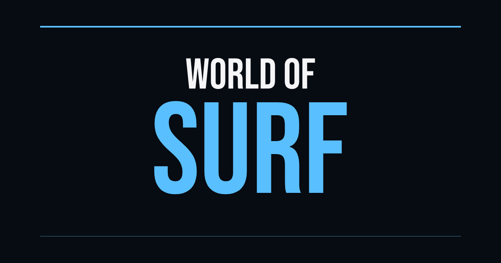

World of Surf
Stage 1 presentation candidate. Established dark/cyan typography, a full wordmark and a compact WOS badge. This preview needs no server, script, network or installed font. It is not a public launch or a new game build.
One color / dark background
One color / light background
Compact icon — actual display sizes
SVG favicon, 180/192/512px PNGs and a seven-size ICO are included. Native executable integration belongs to the next stages, not this preview.
Social card — 1200 × 630

Built on the modified FTEQW engine. Asset inventory, licensing and reproducible export commands.